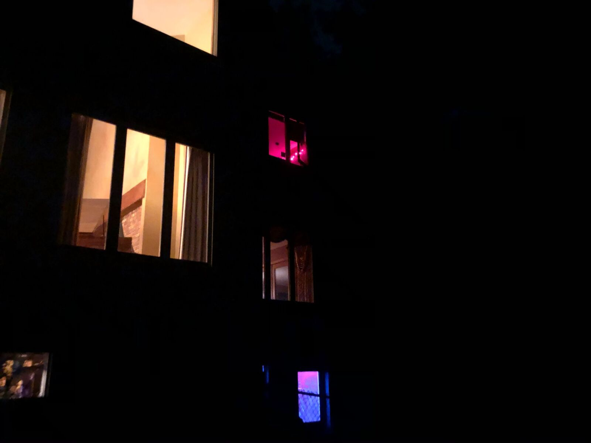

photo: Jake McCoy// about //
The Tuna Can was the de facto music space in the attic of a house on Evans Street in Iowa City.

photo: Jake McCoyThe Tuna Can was the de facto music space in the attic of a house on Evans Street in Iowa City.